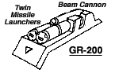
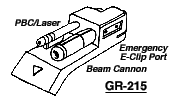
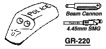
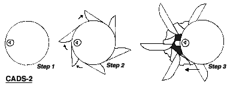
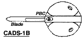
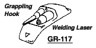

The following material is from
THE THIRD INVID
WAR, a fan supplement by
Dave Deitrich and
Chris
Meadows. Please feel free to use, copy, and distribute
it as you see fit. All we ask is that you give proper credit to us and do not
claim that it is your own work. Comments and suggestions are welcome.
CYCLONE WEAPON MODULES
One of the key features of the cyclone design is the modular weapon systems
it can use. The arm shields of all cyclone models can be customized with a
variety of different weapon packages, allowing the mecha to be equipped with
an array of weapons that match the requirements of its mission. The first
generation cyclones had only three different weapon modules, the GR-97
Plasma Missile Launcher, the EP-37 Beam Cannon, and the RL-6
Portable Rocket Launcher. The second generation cyclones were designed
so that they could use all of the above modules, PLUS a whole new series of
modular weapons being designed by REF engineers. The below list represents
the weapon modules most commonly found on Earth during the Third Invid War.
Newer modules are constantly in development, however, helping to increase
the versatility and efficitiveness of the Cyclone mecha.
CONTENTS:
GR-200 FOREARM MISSILE LAUNCHER/BEAM CANNON

Designed especially for
the VR-152 Battler II, this popular cyclone weapon unit is based on
the old GR-97 Missile Launcher design used on the VR-052 Battler.
The new unit mounts two one-shot plasma missile launchers, combined
with a modified beam cannon derived from the older EP-37 design. The
plasma missiles give the cyclone a heavy punch, and the beam cannons
provide an energy weapon to fall back on when the missiles are gone.
The GR-200 is the commonly requested and issued unit for cyclone
units expecting heavy combat.
The beam cannon draws power directly from the cyclone's fusion reactor,
giving the weapon unlimited ammo so long as the reactor is
functioning. The disadvantage to this is that there is no backup
supply, and the beam cannon becomes useless hardware when the GR-200
is detached (though some resistance fighters have been known to "hot-
wire" the weapon into another power supply). The missile launchers
are of course one-shot weapons.
- Primary Purpose: Assault
- Secondary Purpose: Anti-Aircraft, Anti-Mecha
- Missile Type: REF Plasma Mini-missile ONLY.
- Mega-Damage: Missiles: 1D6x10 M.D.
Beam Cannon: 1D4x10 M.D. per blast.
- Rate of Fire: Missiles: One or two at a time.
Beam Cannon: Aimed, burst, or wild.
- Range: Missiles: 1 mile. Beam Cannon: 4000 ft (1200 m)
- Payload:
1 missile per launcher, for a total of 2 missiles per unit.
The beam cannon draws power directly from the on-board fusion reactor,
so it is effectively unlimited as long as it remains attached to the
cyclone. The cannon is useless if detached.
GR-215 BEAM CANNONS

The GR-215 is an energy-only weapon package for
cyclones. Two different weapons are mounted on the unit; a beam
cannon, for a high damage at short range, and a small particle
cannon, which packs less punch but has a much greater range and
accuracy. The particle cannon uses a guiding laser for maintaining
beam coherence, which in a pinch can be used at lower power settings
for utilitarian purposes such as wielding and cutting.
The GR-215 was originally designed for use with the VR-135 Forager
survival cyclone. The cyclone designers felt that reliance on
missiles would be too big a hinderance in a guerilla combat situation
such as the Invid Wars, and so designed the GR-215 to provide a
dynamic range of energy-weapons that did not require ammo. In
addition, the 215 is the only weapon package designed to take power
directly from an external energy clip, in case the cyclone's reactor
is malfunctioning or otherwise unable to supply power. Finally, as a
direct result of the survival philosophy behind the Forager, the GR-
215s were designed to be extremely simple to maintain and repair int
the field (+20% to repair and modification rolls). Instructions for
disassembling and reassembling the GR-215 are actually printed on the
weapon itself.
VR-135 Forager cyclones come automatically equipped with a pair of GR-
215s, but the popularity of the unit has led it to be commonly used
on other cyclone designs as well. It is often used in conjunction
with another weapon system, such as the GR-200 or a CADS system, in
order to provide greater variety in weapon selection.
- Primary Purpose: Defense
- Secondary Purpose: Survival
- Mega-Damage: Beam Cannon: 4D6 M.D. per blast.
Particle Beam: 2D6 M.D. per shot.
Utility Laser: 2D6 S.D. per round. Bursts are NOT possible with
this weapon.
- Rate of Fire: Equal to the pilot's combined number of attacks.
- Range: Beam Cannon: 2000 ft (600 m)
Particle Beam: 6000 ft (1800 m)
Laser: 200 ft (60 m)
- Payload:
The GR-215 draws power directly from the on-board fusion
reactor, so it is effectively unlimited as long as it remains
attached to the cyclone. The weapon has an emergency E-clip port
that will give it 40 particle beam shots or 20 beam cannon blasts per
clip if necessary.
GR-220 BEAM CANNON/4.45mm SMG

The GR-220 was designed in response to the need
for a weapon unit that combined the high destructive power of a beam
cannon with a more discreet conventional weapon. Such a mix is
useful in both guard and law enforcement duty, where the conventional
weaponry can be used as a deterrent, and the beam weapon used against
heavier opponents. The GR-220 uses a light beam cannon combined with
a 4.45 mm submachine gun, all concealed by a cover plate so as to not
overly indicate the power of the unit. The 220 is commonly issued to
VR-122 Protector cyclones or VR-120 Ferrets on guard duty.
- Primary Purpose: Security/Law Enforcement
- Secondary Purpose: Defense
- Mega-Damage: Beam Cannon: 3D6 M.D. per blast.
SMG: 4D6 S.D. (the 4.45 mm rounds do NOT do M.D.)
- Rate of Fire: Aimed, Burst, or Wild.
- Range: Beam Cannon: 3000 ft (900 m). SMG: 1000 ft (300 m).
- Payload:
The beam cannon draws power directly from the on-board fusion
reactor, so it is effectively unlimited as long as it remains
attached to the cyclone. The cannon is useless if detached. The SMG
has 60 rounds per clip, and extra clips are usually stored in the
carrying bags of the Cyclone.
CLOSE ASSAULT AND DEFENSE SYSTEM MK. II (CADS-2)

Also called "CADS-
Super," this advanced version of the original CADS system is standard
issue for the VR-141 Super Saber. Instead of sword blades, the disk-
shaped hub units conceal whirling buzz-saw blades that can cut
through solid steel girders in seconds. This attachment has great
possibilities in the field of sabotage and demolitions as well as
that of espionage. Like its predecessor, it is mostly silent, except
for a low hum and the sound of the blades whirring. Unfortunately
when cutting through metal, the CADS-2 will tend to make a great deal
of noise, spoiling any chance of surprise.
Like its predecessor, the CADS-2 also contains an energy shield that can
be used to shield the mecha from harm if necessary. The CADS-2 is
large and awkward, and cannot be used as a weapon if detached from
the Cyclone mecha. The unit draws power directly from the cyclone's
onboard fusion reactor.
- Primary Purpose: Hand to Hand Combat
- Secondary Purpose: Clandestine operations
- Range: Within Reach
- Mega-Damage: Slash: 4D6 M.D.
Punch: 6D6 M.D.
Power Punch: 1D6x10 M.D.
- Number of Attacks Per Melee:
Equal to combined hand-to-hand attacks.
M.D.C. Special: 50 when retracted, but a renewing force field provides
the blades and forearms with unlimited M.D.C. when extended (this
only protects the saber blades and forearms).
- Special Bonus:
Adds +3 to parry in hand to hand combat and even enables
the character to attempt to parry/block energy blasts at a +1, but
with ABSOLUTELY NO OTHER BONUSES APPLICABLE.
- NOTE:
The CADS-2 is designed specifically for the VR-141 Super Saber,
but can be used with other cyclones if necessary and available.
Getting permission to use the unit is another matter, however.
CLOSE ASSAULT AND DEFENSE SYSTEM MK. 1B (CADS-1B)

Basically an updated
version of the original CADS-1, designed as an alternative for the
CADS-2. The CADS-1B resembles and has all the functionality of the
CADS-1, but is smaller and has a particle cannon mated to it for
distance attacks.
- Primary Purpose: Assault/Defense
- Secondary Purpose: Clandestine operations
- Range: Blades: Within Reach.
Particle Cannon: 6000 ft (1800 m)
- Mega-Damage: Slash: 2D6 M.D.
Punch: 4D6 M.D.
Power Punch: 6D6 M.D.
Particle Cannon: 4D6 M.D.
- Rate of Fire (Particle Cannon):
Single shot; equal to pilot's number of attacks.
- Number of Attacks Per Melee: Equal to combined hand-to-hand attacks.
- M.D.C. Special:
50 when retracted, but a renewing force field provides
the blades and forearms with unlimited M.D.C. when extended (this
only protects the saber blades and forearms).
- Special Bonus:
Adds +2 to parry in hand to hand combat and even enables
the character to attempt to parry/block energy blasts at a +1, but
with ABSOLUTELY NO OTHER BONUSES APPLICABLE.
- NOTE:
The CADS-1B is designed specifically for the VR-041 Saber or VR-
141 Super Saber, but can be used with other cyclones if necessary and
available. Getting permission to use the unit is another matter,
however.
GR-117 RESCUE HOOK

The GR-117 is a rather unique weapon system originally designed for the VR-117 Firefly rescue cyclone. The primary "weapon" of the GR-117 is a grappling hook launcher with an extremely strong cable and hook. The grappling hook can be used in a variety of purposes, such as a makeshift crane, cable for pulling, or even for securing loose and crumbling fixtures. It can be used for it's original purpose of scaling buildings and walls as well, of course. In addition to the grappling hook, a welding laser is mounted on the module to allow the user to cut through bulkheads and rubble. The GR-117 unit is NOT designed with combat purposes in mind.
- Primary Purpose: Rescue
- Secondary Purpose: Demolition
- Mega-Damage: Grappling Hook: 5D6 S.D. (not designed to be used as a
weapon) Welding Laser: 1D6 S.D., 3D6 S.D., 6D6 S.D., 1D6x10 S.D.,
1D6 M.D., or 3D6 M.D. per round (the laser has multiple settings for
different materials).
- Rate of Fire: Equal to pilot's number of attacks.
- Range: Grappling Hook: 500 ft (150 m) of high-strength wire; 10
M.D.C. per 50 feet.
- Payload: The welding laser draws power directly from the on-board
fusion reactor, so it is effectively unlimited as long as it remains
attached to the cyclone. The laser is useless if detatched.